NIXIESEARCH:

Running Lucene over S3
And why we are building our own serverless search engine
Haystack EU 2024 | Roman Grebennikovwhoami
🔎
- PhD in CS, quant trading, credit scoring
- Findify: e-commerce search, personalization
- Delivery Hero: food search, LLMs
- Opensource: Metarank, lightgbm4j, flink-scala-api

Curse of stateful apps

- Depends on per-node storage
- Up/Down-scaling requires rebalance
- "state inside" - good luck if borked
Blessing of stateless apps

- Managed by cloud providers (and not by you)
- Easier to modify (data + metadata)
Stateless search?
- Lucene world: NRTSearch, OpenSearch
- Non-Lucene: quickwit, turbopuffer

Main point: decouple search and storage
Industry goes stateless
- Uber: Lucene: Uber’s Search Platform Version Upgrade [1]
- Doordash: Introducing DoorDash’s in-house search engine [2]
- Amazon: E-Commerce search at scale on Apache Lucene [3]

[1]: https://www.uber.com/en-NL/blog/lucene-version-upgrade/ [2]: https://careers.doordash.com/blog/introducing-doordashs-in-house-search-engine/ [3]: https://www.youtube.com/watch?v=EkkzSLstSAE
open-source?

Nixiesearch
- Started as a POC for Lucene over S3
- Went further: RAG, local inference, hybrid search
Lucene and S3: 2007

Lucene Directory
IO abstraction for data access:
- lawful good: MMapDirectory, ByteBuffersDirectory
- chaotic evil: JDBCDirectory
public abstract class Directory implements Closeable {
public abstract String[] listAll();
public abstract void deleteFile(String name);
public abstract long fileLength(String name);
public abstract void rename(String source, String dest);
public abstract IndexOutput createOutput(String name, IOContext context);
public abstract IndexInput openInput(String name, IOContext context);
public abstract void close();
}
Lucene S3 Directory

S3 - a remote block store!


Nixie v0.0.1: S3Directory
Own read-only S3Directory, with block caching
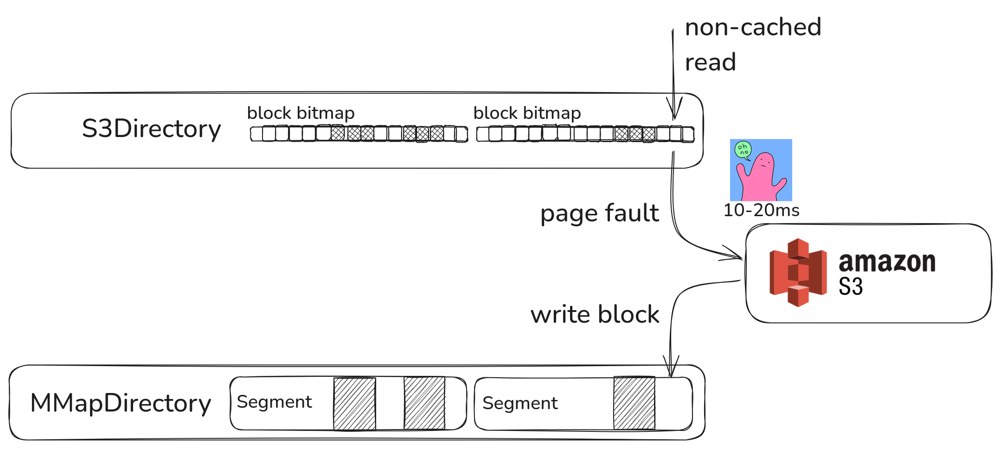Nixie v0.0.1: S3Directory
Own read-only S3Directory, with block caching
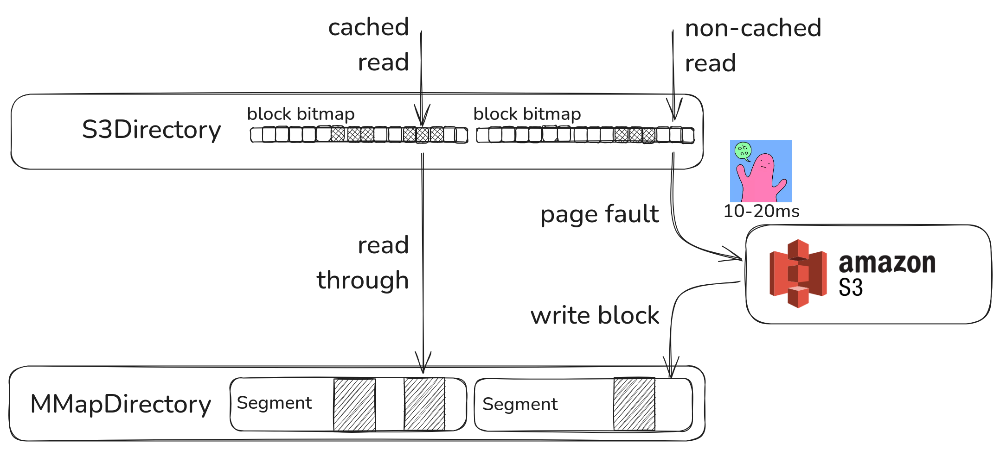- pros: no storage, stateless nodes
- pros: easy up-down scaling, state - file on S3
- con: LATENCY
S3 vs S3-Express latency
S3 Express: low-latency single-AZ S3
 |
 |
first-byte latency: 20ms vs 5ms
S3 vs S3-Express latency
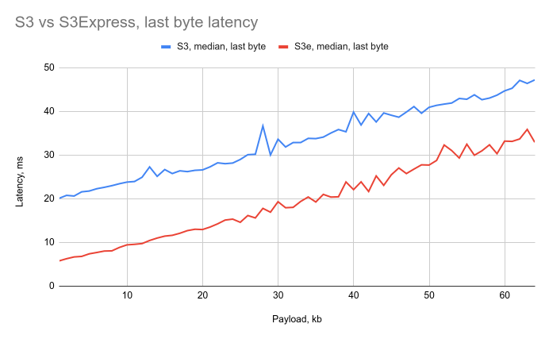last-byte latency: const_delay + transfer
Experiment setup
- MSMARCO dataset, 10k, 100k, 1m documents
- HNSW search over e5-base-v2 (768 dims), 1 segment
- Default Lucene HNSW settings (M=16, efC=100)

- 10k docs: #1 request reads 30% of the index
- 1M docs: 3 SECOND LATENCY?
HNSW for dummies
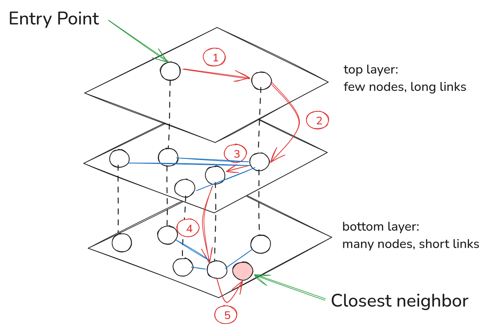Each probe = sequental random read = +5ms
N-th request latency
1M documents, bs=8192:
| 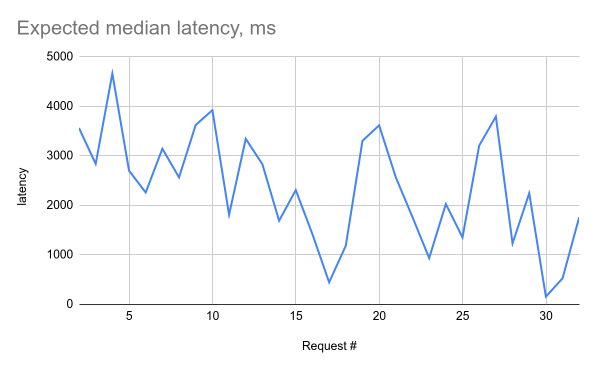 | 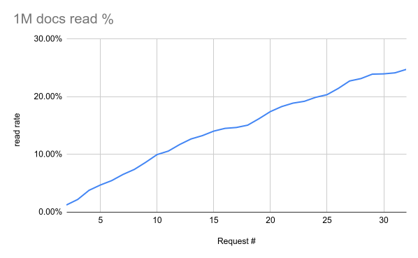 |
Not getting better after request #32 😭
Lucene v10 I/O concurrency
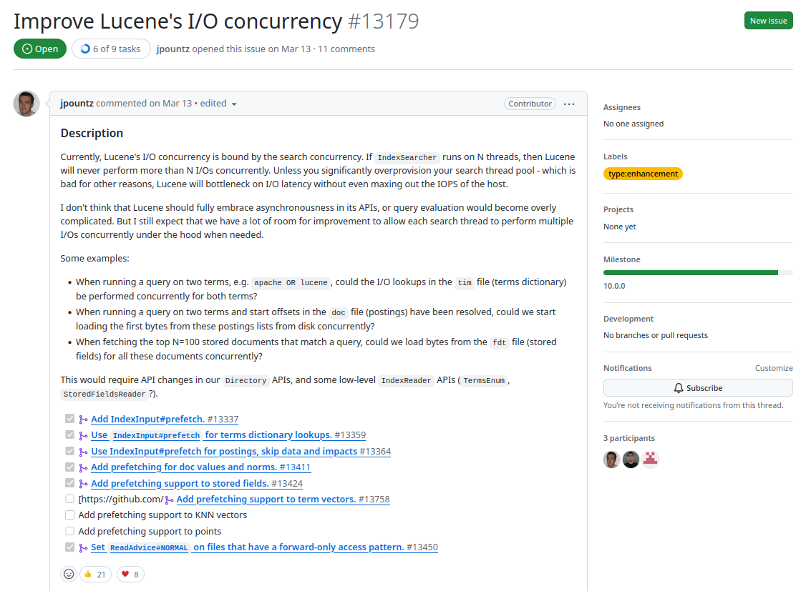LUCENE-13179 TLDR
- Sequential IO is slow, let's make it concurrent
- IndexInput.prefetch - hint for future reads
S3: 👎 latency, 👍 concurrency
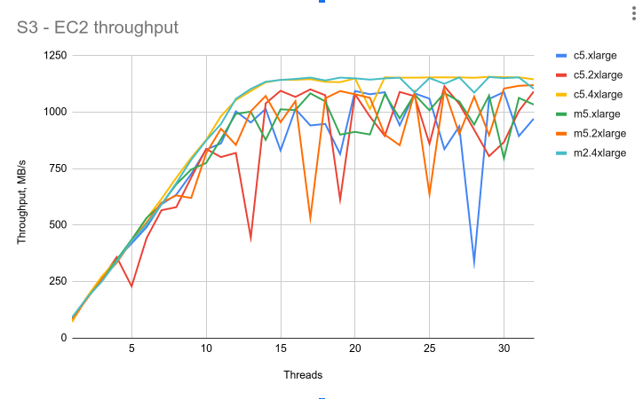- 1 GB/s. Can fetch 10GB index in 10 seconds
Serverless dilemma
- No cold start: need to sync the index
- Fast startup: high search latency
Nixiesearch: segment replication
How far does stateless go?
- Stateless index: on S3 ✅
- Immutable configuration 🤔
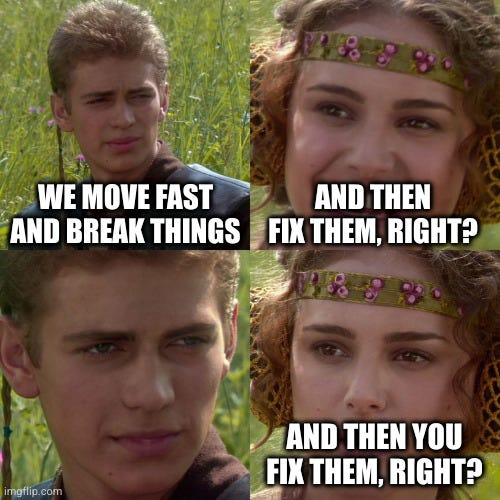
Immutable config
Regular backend app config change:
- Commit config to git
- PR review, CI/CD blue-green deploy
Immutable config
Mapping change in an index:
- Send HTTP POST request to prod cluster
- Earth shaking, light goes off
- You hear siren sounds
Config management in Nixie
inference:
embedding:
text:
provider: onnx
model: nixiesearch/e5-small-v2-onnx
schema:
helloworld:
fields:
title:
type: text
search:
type: semantic
model: text
price:
type: int # can be also float/long/double
filter: true
facet: true
sort: true
Search is not special
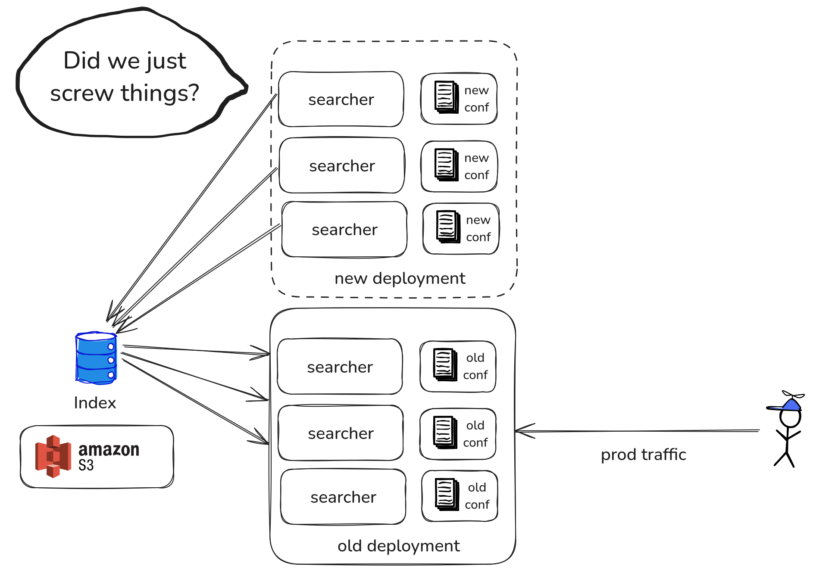- No way to change the runtime config
- Index schema, system settings = just conf
When things go bad
- Index + config compatible = healthcheck OK
- int -> string = need to reindex ☢️
index = directory on S3
Push vs pull indexing
- Push: same cluster, control backpressure
- Pull: separate service, offline
Offline reindex
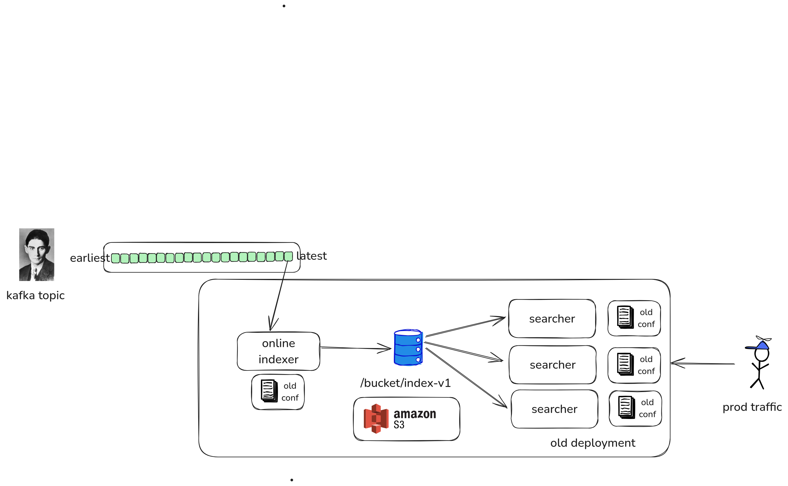Offline reindex
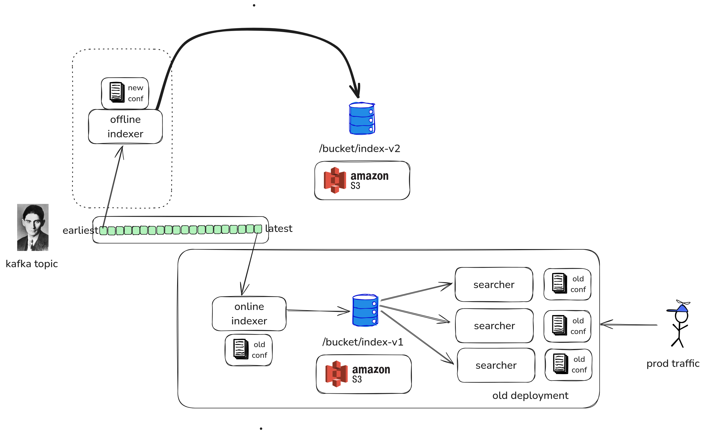Offline reindex
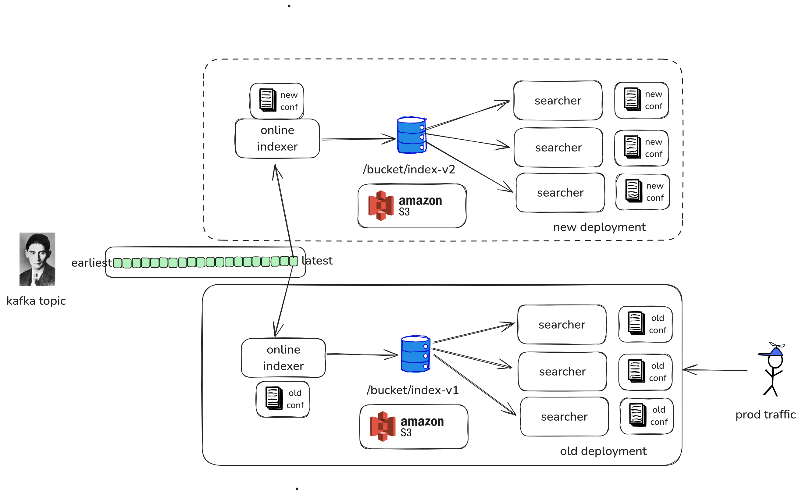Offline reindex
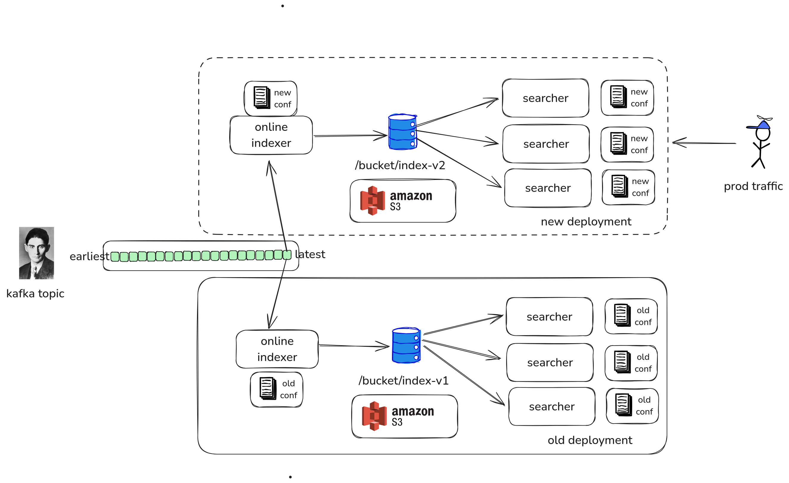demo
Text in, text out, 100% local
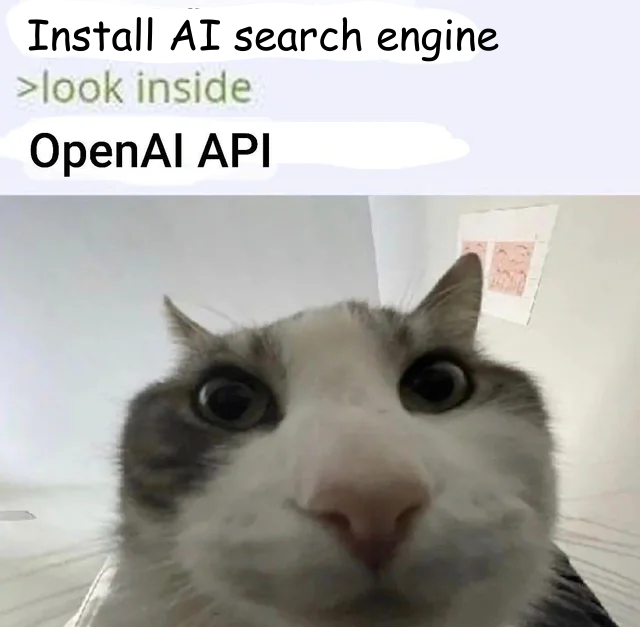
- Embeddings and LLM inference is local
- ONNX, GGUF - GPU for indexing 🤔
docker run --gpus=all nixiesearch/nixiesearch:0.3.3-amd64-gpu index
Why local inference?
- Latency: CPU ONNX e5-base-v2 inference is 5ms
- Privacy: data is not leaving your perimeter
Optional: openai, cohere, mxb, google providers
The Bad, The Ugly
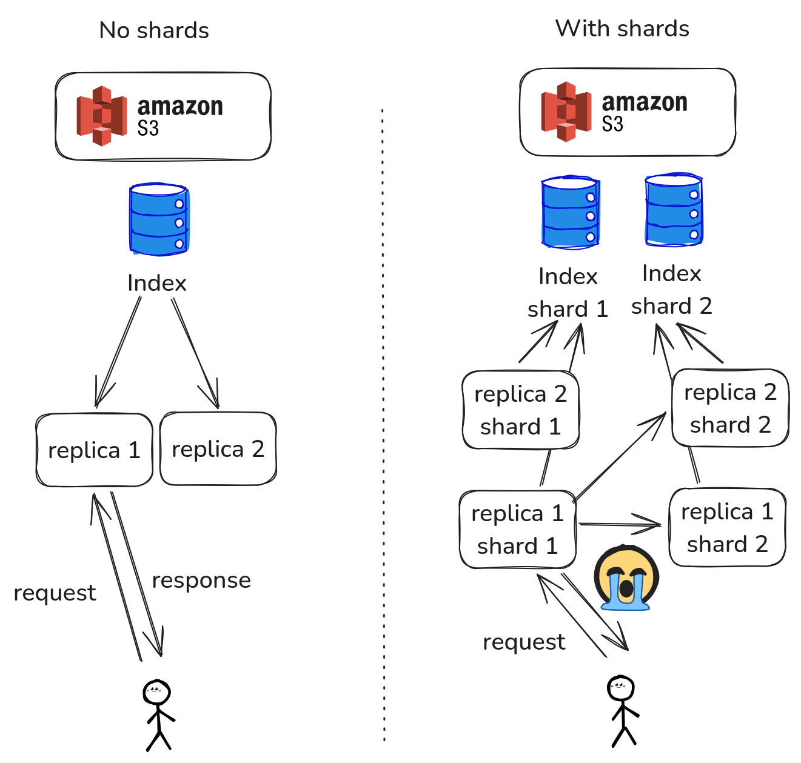
- No sharding support (yet)
No sharding, really?
- 1M docs ESCI index: 4GB
- 1B index: 99% it's logs/APM/traces
Future: reranking support
Single retrieval pipeline:
- Cross-encoder: rerank top-N candidates
- retrieve -> rerank -> summarize
- Local ONNX, optional external providers
Future: ingestion pipeline
Common NLP tasks, automated:
- Transform a field before indexing
- Split to chunks, summarize
- Contextual embeddings for RAG
EC2 g4.large with T4 GPU = 300$/month
Future: domain adaptation
Different search engines, same embedding, same results
- Fine-tuning is dead: you need training data
- You have only docs: can you generate queries and labels?
Future: domain adaptation
Fine-tuning on LLM-generated synthetic data
- For each document generate a query: it's a positive
- For query+positive, mine negatives
- Fine-tune the embedding model
Expect a bumpy ride
- Some features might be missing (like sorting)
- Docs are imperfect - but they exist!
- There
maywill be breaking changes
No baggage - faster to innovate
Links
- Github: nixiesearch/nixiesearch
- Docs microsite: nixiesearch.ai
- Slack: nixiesearch.ai/slack